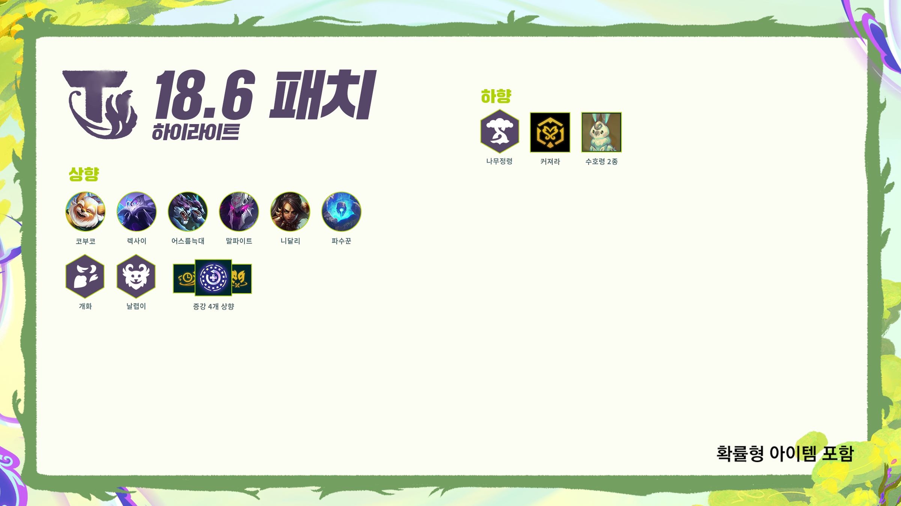

롤토체스 감사 임무 보상, 1판 보물 토큰 500개와 20판 미니 챔피언
롤토체스 감사 임무가 뭔지 궁금해서 11월 4일(한국 시간)에 올라온 18.6 패치노트를 열어 봤는데요, 단독 클라이언트 출시 소식 아래에 감사 임무 보상 안내가 따로 붙어 있더라고요. 공개된 건 세트 19를 1판 하면 보물 토큰 500개, 20판 하면 신화급 미니 챔피언 토큰이 나오는 두 단계와, 18.7 패치 이전부터 가진 계정에 얹어 주는 추가 보상 두 가지예요. 이 중 18.7 이전 보유자 보상은 19.1 패치 출시 후 로그인하면 자동으로 지급된다고 공식 문서에 나와 있고요, 모든 플레이어 대상 1판·20판 임무 쪽 수령 방식은 아직 공개되지 않았어요.

18.6 패치 하이라이트 이미지예요.
이미지: 라이엇게임즈 공식 전략적 팀 전투 18.6 패치노트
롤토체스 감사 임무 보상은 대상별로 네 가지예요
받는 건 네 가지라서 표로 먼저 묶어 볼게요.
| 대상 | 조건 | 보상 |
|---|---|---|
| 모든 플레이어 | 세트 19 게임 1회 플레이 | 보물 토큰 500개 |
| 모든 플레이어 | 세트 19 게임 20회 플레이 | 무작위 신화급 미니 챔피언 1개 분의 토큰 |
| 18.7 패치 이전 신화급 전략가 또는 결투장 보유 | 보유 사실 | 신화 메달 2개 |
| 18.7 패치 이전 프레스티지 전략가 보유 | 보유 사실 | 미공개 신화급 미니 챔피언 |
세트 19는 19.1 패치부터 시작하고 감사 임무도 그 패치에서 제공한다고 해요. 19.1과 18.7이 서버에 들어오는 날짜는 아직 나오지 않았습니다. 세트 19 출시와 감사 임무가 같은 19.1 패치에 묶여 있으니, 세트 19가 열리는 시점이 곧 임무가 시작되는 시점이라고 보시면 됩니다.
단독 클라이언트는 18.6 패치와 함께 나왔고, 공식 노트는 이걸 18.7 이후 세트 19까지 이어질 개선의 토대라고 설명했어요. 감사 임무는 언리얼 엔진으로 옮기는 과정에서 겪은 우여곡절을 인정하고, 기다려 준 플레이어에게 감사하는 뜻으로 19.1 패치에 임무와 추가 보상을 넣는 거라고 하네요. 엔진을 옮기느라 불편했던 분들께 건네는 인사에 가깝죠.
세트 19가 열리는 19.1 패치에는 꼬마 전설이 관련 안내도 같이 붙어 있어요. 이건 롤토체스가 아니라 리그 오브 레전드 쪽 이야기예요. 19.1 패치부터 새로 출시되는 꼬마 전설이는 리그 오브 레전드의 무작위 총력전에 데려갈 수 없습니다. 반면 19.1 이전에 출시된 꼬마 전설이는 칼바람 나락에 지금처럼 계속 데려갈 수 있고요. 같은 무작위 총력전 안에서도 가르는 기준은 출시 시점이라는 점만 기억하세요. 배포 쪽도 한 줄 적어 둘게요. 18.6에서 단독 클라이언트가 처음 나온 탓에 PC든 모바일이든 업데이트가 평소보다 오래 걸릴 수 있다고 공식 노트가 밝혔죠. 지역별로 언제 적용되는지는 나중에 따로 공지하겠다고 하니, 그때그때 공지를 확인하시면 됩니다.
모든 플레이어는 1판 보물 토큰 500개, 20판 신화급 미니 챔피언 토큰
세트 19를 켜는 모든 분께 해당하는 두 단계입니다.
20판을 채우면 받는 건 무작위로 정해지는 신화급 미니 챔피언 1개 분의 토큰이에요. 이 토큰은 아무 배너에서나 쓰이는 게 아니라 신화급 미니 챔피언만 나오는 신규 배너에서만 쓸 수 있고, 해방된 전략가와 신화급 꼬마 전설이는 이 배너에 포함되지 않는다고 공식 노트가 못 박았어요. 미니 챔피언과 꼬마 전설이는 패치노트에서도 다른 항목이라 헷갈리지 않게 구분해 보셔야 합니다. 1판 보상과 20판 보상은 각각 따로 적힌 조건이라, 세트 19를 한 번만 돌려도 보물 토큰은 챙길 수 있어요.
18.7 이전 보유자는 신화 메달 2개 또는 미공개 미니 챔피언
이쪽은 기준 시점이 대상 여부를 가릅니다.
18.7 패치 이전에 신화급 전략가 또는 결투장을 보유한 플레이어는 신화 메달 2개, 프레스티지 전략가를 보유한 플레이어는 아직 정체가 공개되지 않은 신화급 미니 챔피언을 받아요. 개발자 문서는 이 보상의 취지를 전환 과정 중 신비의 숲에서 일부 품목을 사용할 수 없었던 점에 대한 추가 보상이라고 소개했습니다. 지급은 19.1 패치 출시 후 게임에 로그인하면 자동으로 이뤄진다고 하니, 해당하는 분은 로그인만 해 두시면 되겠네요.
내 계정은 어디에 해당할까요
계정 상태별로 먼저 볼 곳이 달라요.
- 세트 19를 막 시작하는 분은 1판·20판 두 줄이 모든 플레이어 대상이라 따로 조건을 볼 일이 없어요.
- 신화급 전략가나 결투장, 프레스티지 전략가가 있는 분은 '18.7 패치 이전'에 얻었는지부터 확인하세요. 그 시점으로 추가 보상이 갈리니까요.
- 해방된 전략가나 신화급 꼬마 전설이를 노리는 분은 신규 배너가 대상이 아니라서 이 토큰으로는 어렵습니다.
확인 위치: 라이엇 공식 공지와 인게임 임무 화면 · 확인되면 이 박스를 실제 내용으로 바꿔 주세요.
| 항목 | 상태 |
|---|---|
| 19.1·18.7 패치 적용 날짜 | 미공개 |
| 모든 플레이어 1판·20판 임무의 수령 방식과 지급 시점 | 미공개 |
| 보상 수령 기한, 이미 한 판의 소급 여부 | 미공개 |
| 신규 배너 이름, 신화급 미니 챔피언 목록·확률 | 미공개 |
| 보물 토큰 500개의 가치, 신화 메달 용처 | 미공개 |
| 프레스티지 전략가 보상 신화급 미니 챔피언의 정체 | 미공개 |
자주 묻는 질문
Q. 미니 챔피언이 꼬마 전설이랑 같은 건가요?
패치노트에는 서로 다른 항목으로 적혀 있어요. 참고로 세트 19의 신규 꼬마 전설이는 무작위 총력전에 데려갈 수 없고, 19.1 이전 꼬마 전설이는 칼바람 나락에서 계속 쓸 수 있다고 합니다.
Q. 두 가지 추가 보상은 따로 받는 건가요?
공식 노트는 세트 19를 플레이하면 모든 플레이어에게 주는 보상과, 18.7 이전 보유자에게 얹어 주는 추가 보상을 서로 다른 조건으로 적었어요. 그래서 둘 다 해당하는 계정이라면 각각의 조건을 따로 채우는 구조로 읽힙니다.
Q. 수령 방식은 어디서 나온 얘기인가요? / 18.6 패치노트가 링크한 공식 개발자 문서에 18.7 이전 보유자 보상의 자동 지급 안내가 들어 있어요.
Q. 18.6 패치는 언제부터 적용되나요?
공식 노트는 단독 클라이언트 출시로 PC와 모바일 배포가 평소보다 오래 걸릴 거라 안내했고, 지역별 적용 시각은 추후 안내하겠다고 했어요.
일단 세트 19 1판은 가볍게 채워 두시면 됩니다. 날짜와 임무 수령 방식은 공지가 뜨면 다시 맞춰 볼게요~ 2026년 11월 5일 기준으로 쓴 글이에요.
✔ 롤토체스 같이 보기 좋은 내용
· 롤토체스 18.5c 패치, 카직스·덩굴정령·정의의 손길 3건 수치 정리
· 롤토체스 덱 티어 18.5b 마스터+ 평균등수·순방률 기준
· 롤토체스 추천메타 요정 트리스타나 덱, 18.5 상향 뒤 성적
참고한 곳
· 라이엇게임즈 공식 — 전략적 팀 전투 18.6 패치 (게시 2026.11.04 한국 시간, 조회 2026.11.05)
· 라이엇게임즈 공식 — 전략적 팀 전투 개발자 문서: 클라이언트, 다음 세트 미리보기 및 감사 임무 (조회 2026.11.05)